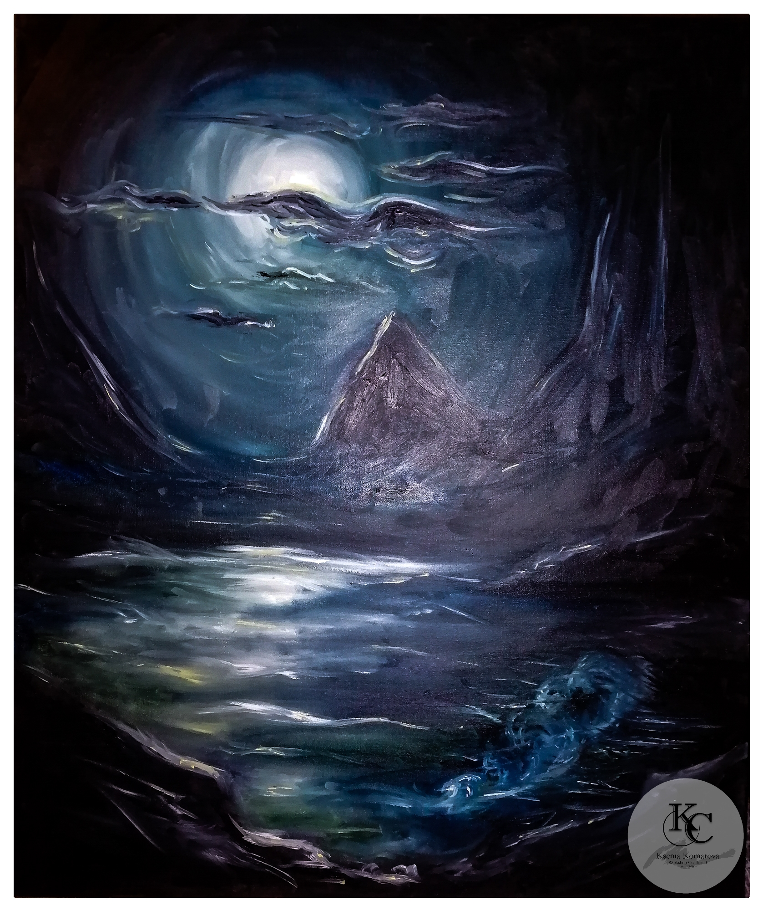
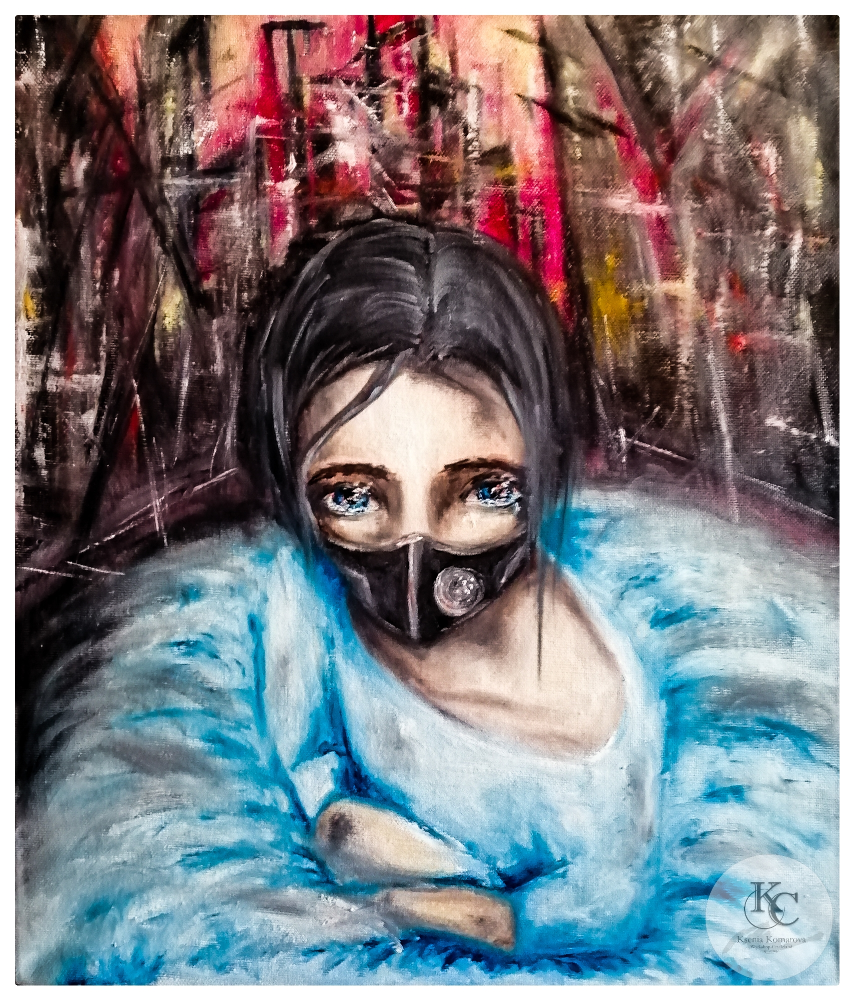
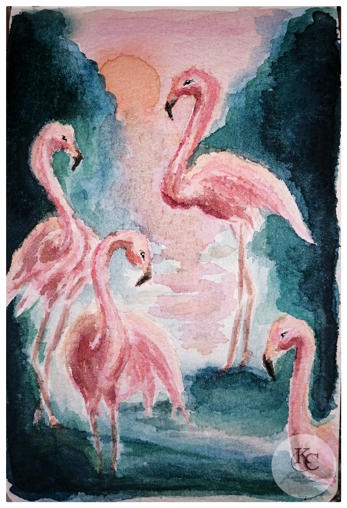
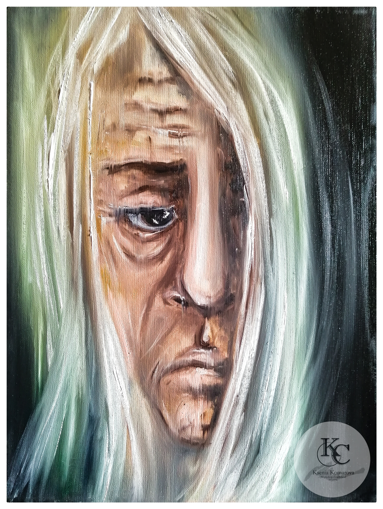

ДВА СОСТОЯНИЯ ЦВЕТА
Передвигайте границу


Выберите любые две работы и двигайте границу, чтобы сравнить их цвет и фактуру.
 АВТОР / КСЕНИЯ КОМАРОВА
АВТОР / КСЕНИЯ КОМАРОВАЖИВОПИСЬ / КСЕНИЯ КОМАРОВА
Нажмите на картину, чтобы рассмотреть её. Ниже — разбор цвета шести работ ↓
РАССМОТРЕТЬ БЛИЖЕ
ДВА СОСТОЯНИЯ ЦВЕТА
Выберите любые две работы и двигайте границу, чтобы сравнить их цвет и фактуру.
СЛОИ И МАЗКИ

Ведите указателем или пальцем по работе — стеклянная линза приблизит фрагмент.
КАРУСЕЛЬ РАБОТ
Перетаскивайте карточки, нажимайте на переднюю или листайте стрелками — порядок работ можно менять.
ШЕСТЬ РАБОТ · ШЕСТЬ ЦВЕТОВЫХ РЕШЕНИЙ
Не универсальные схемы, а наблюдения за тем, что происходит в конкретных картинах. Палитры показаны приблизительно по репродукциям.
Мятно-серые и пыльно-розовые слои не спорят за центр. Холодный зелёный раскрывает пространство, а розовые и охристые следы дают ему напряжение. Светлая середина собирает разные жесты в целое.

Охра и золото несут тепло, но тёмная умбра делает его собранным, не декоративным. Приглушённый серо-оливковый связывает лицо и фон, а светлый круг удерживает фокус.

Сине-фиолетовая ночь и почти чёрные участки создают тишину. Лунный свет становится маршрутом взгляда: сначала вспышка на небе, затем её отражение в воде.

Бирюзово-голубой костюм резко отделяется от горячих красно-малиновых и тёмных тонов города. Контраст не успокаивает сцену, а подчёркивает уязвимость и напряжение образа.

Пыльно-розовые птицы звучат на фоне сине-зелёной воды. Тёмный бирюзовый собирает розовый, а светлое небо смягчает их встречу: контраст превращается в ритм.

Холодные бело-серые пряди пересекают лицо и задают вертикальный ритм. На их фоне тёплая охра кожи становится особенно живой, а приглушённый шалфейный фон удерживает портрет от излишней драматичности. Один светлый глаз собирает взгляд.
Цветовые названия и палитры — авторское чтение картин, а не техническое описание пигментов. Оттенки на экране зависят от устройства.
ЦВЕТ НЕ ОБЯЗАН БЫТЬ УДОБНЫМ
Мне интересно не сглаживать противоречия, а находить точку, где противоположности удерживают друг друга. Там, где оттенок усиливает другой, а форма сохраняет напряжение, рождается образ.
Природное чутьё на цвет — это внимание к отношениям: как сложный оттенок меняет пространство и как неожиданные сочетания становятся цельными.
ОБСУДИТЬ РАБОТУ ИЛИ СОТРУДНИЧЕСТВО
Напишите мне о работе — отвечу по её статусу и возможности просмотра.